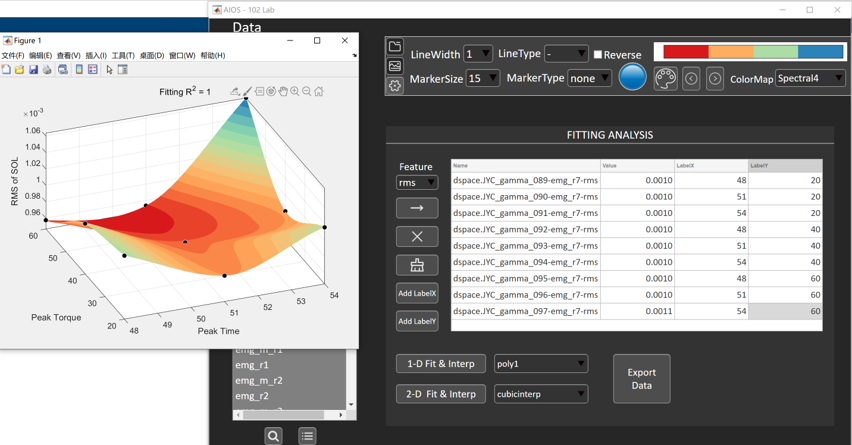
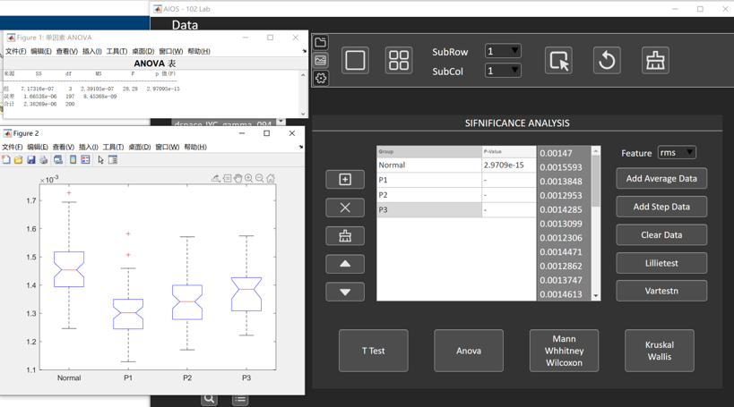
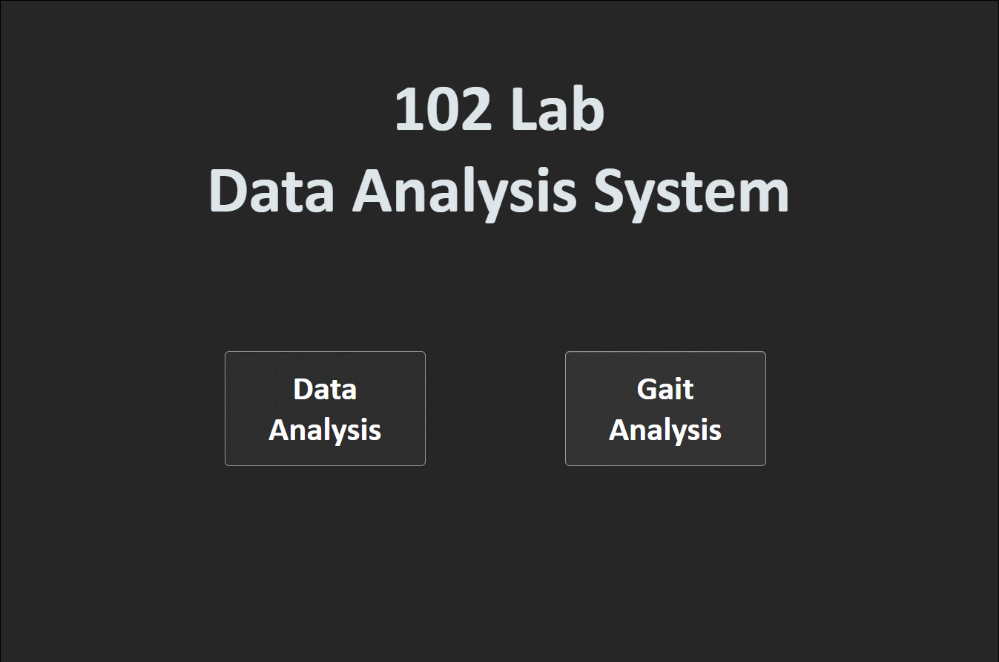
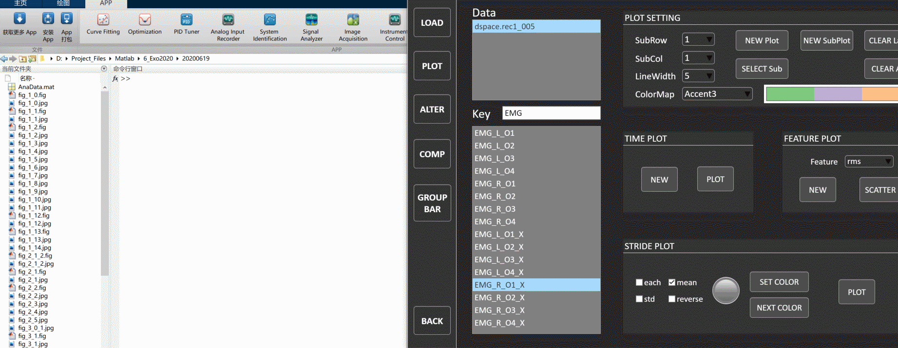
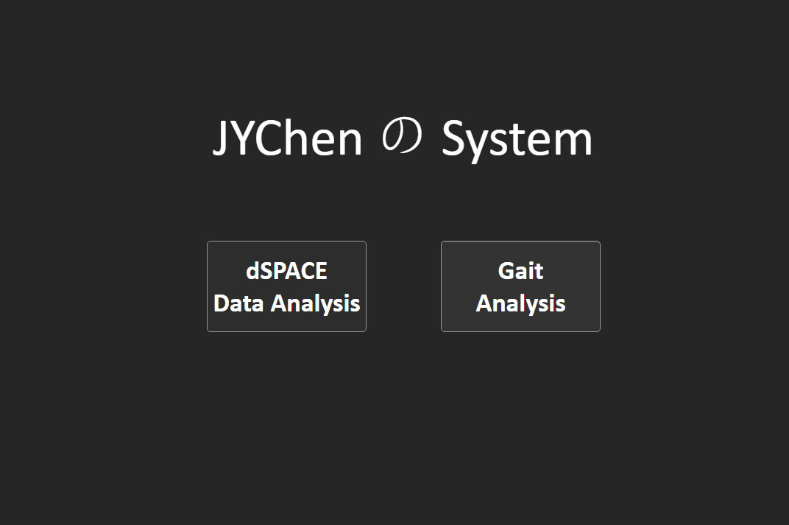
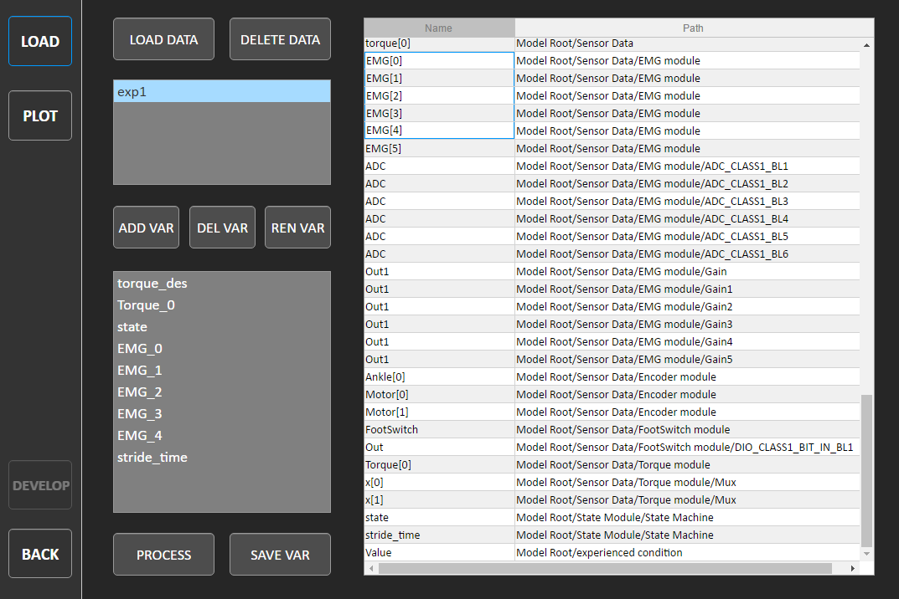
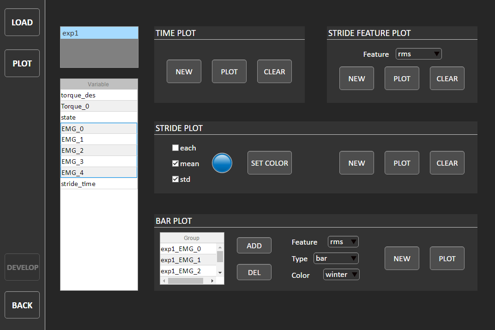

最新版本 v5.6
下载链接，拖动到Matlab命令行窗口中即可安装
更新说明
v5.6
- 支持一维、二维特征插值与拟合
- 支持4种显著性分析（T-test、Anova、Mann-Whhitney-Wilcoxon、Kruskal-Wallis）

v5.1
- 优化显示界面
- 增加过渡动画
- 增加更多曲线线型设置
- 优化色彩排序
- 修复单组柱状图绘制BUG

v4.12
- 支持绘制SubPlot：选择子图数目，点击
NEW SubPlot创建子图；选择子图行、列序号，点击SELECT Sub选中子图进行绘制

v4.10
- 增加对双侧外骨骼的实验数据支持。确保数据中包含变量”state_r”和”state_l”；所有变量名中包含”_r”/“_R”的变量将作为右侧数据进行步态分割；所有变量名中包含”_l”/“_L”的变量将作为右侧数据进行步态分割；其他数据作为右侧数据进行步态分割。
v4.9
- 修复不同分辨率下的显示问题
v4.8
- 重新加入Scone的GRF & Kine数据提取（LOAD界面）
- 支持Group Bar的误差线绘制（Broup Bar界面）
- 支持Bar和Group Bar的即时是数据导出（COMP & Broup Bar界面）
- 支持数据中部分Step的删除，用于剔除错误的Step（LOAD界面）
v4.0
- 优化配色系统，加入othercolor
- 支持绘制步态变化曲线
- 支持相图绘制（关节角vs关节力矩）
- 支持绘制曲线对比与特征柱状图
- 支持绘制GroupBar（肌电特征）
v3.0
- 全面优化代码结构，降低复杂度
v2.0
- 支持导入Scone数据
- 支持导入PredSim数据
- 支持导入OpenSim数据（需配和步态分割信号进行数据处理）
V1.0
基于Matlab App Designer设计了一款实验室数据分析软件AIOS



软件使用介绍
打开软件
有两种方式打开AIOS，第一种通过Matlab APP打开，启动速度较快；第二种通过exe文件直接打开，无需依赖。
通过Matlab APP打开：
通过exe文件打开：
加载数据
导入实验文件
软件可导入由dSPACE ControlDesk采集得到的数据，并支持多个数据文件的导入与分析：

提取数据变量并处理
从原始数据中提取有用数据变量进行分析
- 支持变量重命名
- 支持数据一键处理（处理详情待补充），需先提取state变量
- 支持数据保存

绘图
绘制时间序列曲线
- 在新建Figure窗口中绘图，方便图像缩放、保存和进一步处理
- 支持多曲线绘制与窗口清空


绘制步态周期曲线
- 支持步态周期逐条曲线、平均曲线、方差区域的绘制
- 支持多曲线绘制与颜色设置


绘制步态特征柱状图
- 支持柱状图数据导入与删除
- 支持步态特征选择（rms、mean、max、min）
- 支持bar与error bar切换
- 支持colormap设置